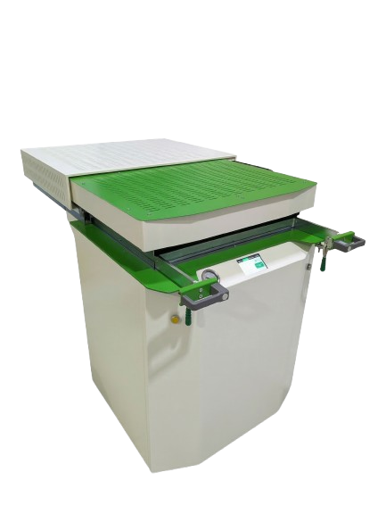
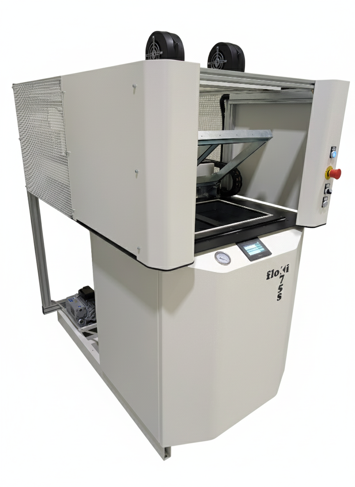

Integriertes Diagnosesystem
K53 Manuell
Manuelle Steuerung, kompakte Abmessungen
Thermoformmaschine mit manueller Steuerung, ideal für variable Produktion und häufigen Formatwechsel. Dediziertes Diagnosesystem für schnelle, autonome Wartung. Kompakte Abmessungen für begrenzte Produktionsräume.
Vollständige manuelle Steuerung
Dediziertes Diagnosesystem
Kompakte Abmessungen

Integriertes Diagnosesystem
K75 Manuell
Manuelle Steuerung für maximale betriebliche Flexibilität
Thermoformmaschine mit manueller Steuerung, ideal für variable Produktion und häufigen Formatwechsel. Dediziertes Diagnosesystem für schnelle, autonome Wartung.
Vollständige manuelle Steuerung
Dediziertes Diagnosesystem
Schneller Formatwechsel

Integriertes Diagnosesystem
K75S Automatisch
Vollständige Automatisierung für die Hochvolumenproduktion
Thermoformmaschine mit programmierbarer SPS für vollständige Zyklusautomatisierung. Diagnoseplatine zur Heizelement-Überwachung. Optimiert für Dauerproduktion.
Programmierbare SPS
Dediziertes Diagnosesystem
Vollständige Automatisierung